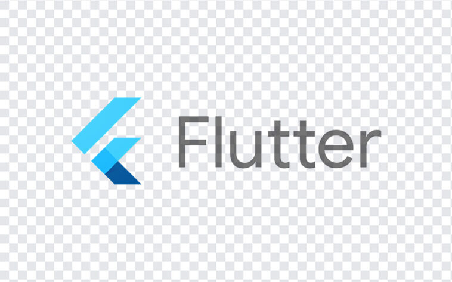

Recent projects
Live coding
The Live Coding Project is a collaborative endeavor developed by our university, ESPRIT. It aims to facilitate code sharing among team members using peer-to-peer technology, similar to Microsoft's Live Share. Specifically designed for online projects, this platform enables seamless sharing of code panels and includes a built-in board for explaining code within the VS Code environment. One of the key features of the Live Coding Project is the ability to save videos in the coding section. Users can record their coding sessions along with the corresponding code folder, and both the video and code files can be easily shared on the platform or via email. This functionality allows users to revisit and restructure the code from scratch by watching the recorded videos at a later time. With its emphasis on real-time collaboration and convenient code-sharing capabilities, the Live Coding Project revolutionizes the way teams work on online projects, fostering enhanced productivity and streamlined development processes.
Check it out!iFLOW
In order to promote innovation within a company, Clara Idea proposes the development of a web platform, utilizing Next.js for the frontend and Node.js for the backend, aimed at facilitating idea-sharing among employees, organizing their work, and motivating them through challenges and rewards. Additionally, the platform offers promotional opportunities for the company.
The proposed platform allows supervisors to create challenges in which employees can participate, leading to the selection of a challenge winner. Furthermore, a system is implemented to enable users to evaluate the shared ideas. To enhance the project, an intelligent recommendation system is developed using Google Dataset, machine learning techniques, and Python, with the platform being hosted with Docker.
The project follows a series of stages, adopting the Scrum methodology. These stages include identifying the necessary requirements of the application, designing the envisioned solution, establishing a detailed technical structure, and finally implementing the application.
Keywords: Software engineering, Web development, Machine learning technology, Scrum, Next.js, Docker, Python.
iFLOW Mobile
Expanding upon the web-based Iflow platform, I have developed a mobile application using Flutter. This application serves as an extension, allowing employees to conveniently access and enjoy the benefits of the Iflow platform through their mobile devices. With the mobile application, users can seamlessly interact with Iflow's features and functionalities, all from the convenience of their smartphones or tablets. By leveraging the power of Flutter, I have crafted a user-friendly and efficient mobile experience that enhances the accessibility and utility of the Iflow platform for employees on the go.
Check it out!